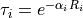
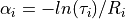

WSF_OPTICAL_ATTENUATION¶
- attenuation_model WSF_OPTICAL_ATTENUATION¶
attenuation_model <name-or-type> WSF_OPTICAL_ATTENUATION # Explicit Table Selection Commands internal_table ... external_table ... # Implicit Table Selection Commands atmosphere_model ... haze_model ... # Miscellaneous Commands adjustment_factor ... # Conversion Commands spectral_data_conversion ... optical_path_conversion .. end_attenuation_model
Overview¶
WSF_OPTICAL_ATTENUATION is an attenuation_model used with visual and infrared systems such as WSF_EOIR_SENSOR and WSF_IRST_SENSOR.
The model computes the attenuation for a given interaction as follows:
The atmosphere is considered to be a collection of concentric layers that envelop the Earth.
The transmittance for each layer through which the path passes is computed as follows:

where is the attenuation coefficient for the layer and
 is the slant range
through the layer.
is the slant range
through the layer.The transmittance for the entire path is simply:

The model utilizes a table that defines the altitudes of the layer boundaries and a mechanism for determining the attenuation coefficients at the those altitudes. In some cases the coefficient for a particular altitude may be a constant, or it may be something more complex. To determine the coefficient for a particular layer, the coefficient will be the average of the coefficients for altitudes at the end points of the path through the layer (potentially interpolated if the path starts or stops in the layer).
Conceptually the table used by the model defines the attenuation coefficient as a function of altitude (It is slightly more complex than that as will be discussed in the next section.) The model includes a number of internal tables for common atmospheric conditions. These may be referenced by simply using the internal_table command. If needs are more complex then MODTRAN or some equivalent program may be used to generate data which can then be converted using the spectral_data_conversion command. The output from the conversion can be used as the argument to the external_table command.
Table Construction¶
The function of the spectral_data_conversion command is to take spectral transmittance data from a high fidelity atmosphere model (e.g. MODTRAN) and massage it so it can be used by the his model. The high fidelity program is run at a selected number of altitudes, and at a number of ranges for each of the altitudes. For each of the points (altitude/range pair) the high fidelity program produces transmittance as a function of wavelength (actually it is a collection of ‘bins’ centered about a wavenumber). The first step is to integrate the transmittance at the point and to arrive at an average transmittance across the spectrum at that point. For monochromatic light there is only one ‘bin’, so the integral is trivial. After this step the spectral nature of the spectrum has been lost.
Once the first step has been completed, for each altitude we are left with a set of points that defines transmittance as a function of range. From there, for each of the points we derive the attenuation coefficient by:

Evaluation of the MODTRAN runs for monochromatic light showed the attenuation coefficients are nearly constant, thus validating our assumption of using the Beer-Lambert Law. For these cases we simply need to store a single attenuation coefficient for each altitude. But for non-monochromatic spectra the situation is no so clear cut (and even for monochromatic light it starts to exhibit problems in some areas.) By examination a very unusual result was found. If one plotted the natural log of the attenuation coefficient vs. the natural log of the range, the result looked like a straight line. So for these more complex cases the table contains the coefficients of the straight line. This lets us recover the coefficient knowing the range through the layer.
Unfortunately, that is not the end of the story. In some cases the linear fit still had too much error. So what was done was to all a number of segments per altitude. The conversion process attempts to find as long a segment of ranges as possible such that the straight line produces an acceptable error. So far four segments have been adequate to represent the worst case.
The apparent reason for all of this is due to the differing ways that different wavelengths interact with the atmosphere. Because the spectral content is integrated to determine a single attenuation coefficient, the coefficient at different ranges will may change in a non-linear way as because the underlying wavelengths are changing at different rates.
Explicit Table Selection Commands¶
These commands may be used to explicitly select a specific internal or external table.
- internal_table <table_name>¶
Specifies that attenuation is to be computed using the internal table with the specified name. The name of the table is constructed as follows:
<spectrum>_a<atm>_h<haze>
where:
<spectrum> is the spectral domain name as follows:
mono_1000nm
Monochromatic (Laser) 1000nm
mono_1064nm
Monochromatic (Laser) 1064nm
mono_1550nm
Monochromatic (Laser) 1550nm
mono_1572nm
Monochromatic (Laser) 1572nm
mwir
Mid-Wave Infrared, 3um-5um
lwir
Long-Wave Infrared, 8um-12um
visual
Visual, 380nm-760nm
<atm> is the MODTRAN atmosphere model as follows:
1
Tropical (15 degrees north latitude)
2
Mid-Latitude Summer (45 degrees north latitude)
3
Mid-Latitude Winter (45 degrees north latitude)
4
Sub-Arctic Summer (60 degrees north latitude)
5
Sub-Arctic Winter (60 degrees north latitude)
6
1976 US Standard Day
<haze> is the MODTRAN atmosphere model as follows:
1
RURAL extinction, default VIS = 23 km.
2
RURAL extinction, default VIS = 5 km.
3
NAVY MARITIME extinction, sets VIS based on wind speed and relative humidity.
4
MARITIME extinction, default VIS = 23 km (LOWTRAN model).
5
URBAN extinction, default VIS = 5 km.
6
TROPOSPHERIC extinction, default VIS = 50 km.
8
FOG1 (Advective Fog) extinction, 0.2 km VIS.
9
FOG2 (Radiative Fog) extinction, 0.5 km VIS.
10
DESERT extinction, sets visibility from wind speed (WSS).
The following tables are provided:
Spectrum
Atmosphere
Haze
mono_1000nm
2,3
1,2,3,5,9,10
mono_1064nm
2,3
1,2,3,5,9,10
mono_1550nm
2,3
1,2,3,5,9,10
mono_1572nm
2,3
1,2,3,5,9,10
mwir
2,3
1,2,3,5,9,10
lwir
2,3
1,2,3,5,9,10
visual
2,3
1,2,3,5,9,10
For example:
internal_table mono_1000nm_a2_h1
would select the table for the monochromatic 1000nm spectrum, mid-latitude summer, rural extinction, 23km default visibility.
Default: none - either internal_table or external_table must be specified.
- external_table <filename>¶
Specifies that attenuation is to be computed using the table loaded from the specified file. The file will have typically been created using either the spectral_data_conversion or optical_table_conversion command. However, a manually created file of the form documented below in Simple Table Format is also acceptable.
Default: none - either internal_table or external_table must be specified.
Implicit Table Selection Commands¶
If a table has not been explicitly selected by one of the above Explicit Table Selection Commands, an attempt will be made to select a table based on the wavelength and bandwidth of the transmitter or receiver to which this instance is attached. The following commands will also be used to aid in the selection:
- atmosphere_model <integer>¶
Specifies the MODTRAN atmosphere number. See internal_table for a description of the allowable values.
Default: 2 (Mid-latitude summer)
- haze_model <integer>¶
Specifies the MODTRAN haze_model number. See internal_table for a description of the allowable values.
Default: 1 (23KM Rural extinction)
Miscellaneous Commands¶
- adjustment_factor <value>¶
Specifies a multiplier to be applied to returned values. This would typically be used to account for the fact that values integrated over a wide band (i.e.: lwir, mwir, visual) represent an average that may include many ‘dead-zones’ that the sensor may exclude. Thus, the effective transmittance may be higher.
Note
The return values are transmittance, so to increase transmittance specify a factor greater than one.
Default: 1.0 (no adjustment)
Conversion Commands¶
These commands are used to convert other data forms into a form that can be used by this model.
Note that the conversion commands are typically run separately from any actual simulation runs that use the generated tables.
- spectral_data_conversion … end_spectral_data_conversion¶
This command is used to take the spectral results from MODTRAN and convert them into a form that can be used by external_table or into code that can be compiled into the executable.
- spectral_data <filename>¶
Specifies the name of the spectral transmittance file from which the table is to be created. If run using the defined processes it will have the suffix _cpt.plt’. This file is currently produced by a process that runs MODTRAN in transmittance mode using the ‘constant pressure altitude’ geometry specification.
The altitudes from the file determine the altitude boundaries of the layers. Therefore more altitudes should be used in areas where conditions are changing rapidly. The number of ranges per altitude should be to properly detect rate of extinction. The processes currently employed use 66 altitudes and 191 ranges.
Default: none - this must be provided.
- table_output <filename>¶
Specifies the name of the file that will contain the converted results in a form usable as the argument to the external_table command.
Default: none - either table_output or code_output must be provided.
- code_output <filename>¶
Specifies the name of the file that will contain the converted results in a form that is useful for compiling in as one of the embedded models available by internal_table.
Default: none - either table_output or code_output must be provided.
- maximum_segment_count <integer>¶
The maximum number of linear segments that will be allowed per altitude.
Default: 5
- maximum_absolute_error <real_value>¶
Maximum allowed absolute error between the input transmittance and the modeled transmittance within a segment.
The value should probably never be set less than the default value. The default has been chosen to provide acceptable results and table sizes for monochromatic light. A reasonable value for non-monochromatic light is 0.005.
Default: 0.0001
- maximum_relative_error <real_value>¶
Maximum allowed relative error between the input transmittance and the modeled transmittance within a segment.
Default: 0.005
- optical_path_conversion … end_optical_path_conversion¶
This command is used to convert one of the legacy atmospheric_coefficients tables used by WSF_LASER_WEAPON and WSF_CUED_LASER_WEAPON into a form that can be used by the external_table command.
- wavelength <Length>¶
Specifies the wavelength of the coefficient table to the selected.
Default: none, must be provided
- atmosphere_model <integer>¶
Specifies the MODTRAN atmosphere model number of the coefficient table to be selected.
Default: none, must be provided
- haze_model <integer>¶
Specifies the MODTRAN haze model number of the coefficient table to be selected.
Default: none, must be provided
- table_output <filename>¶
Specifies the name of the file that will contain the converted results in a form usable as the argument to the external_table command.
Default: none - either table_output or code_output must be provided.
- code_output <filename>¶
Specifies the name of the file that will contain the converted results in a form that is useful for compiling in as one of the embedded models available by internal_table.
Default: none - either table_output or code_output must be provided.
Simple Table Format¶
The external_table command accepts a file that contains the specification of the attenuation coefficient to be used for each altitude in the the following format:
compact_table
altitude <alt_1 length-value>
range_limit 10000000.0 meters <alpha_1> 0.0
end_altitude
altitude <alt_2 length-value>
range_limit 10000000.0 meters <alpha_2> 0.0
end_altitude
...
altitude <alt_n length-value>
range_limit 10000000.0 meters <alpha_n> 0.0
end_altitude
end_compact_table
The altitudes must include units and be monotonically ascending. <alpha> is the attenuation coefficient in units of 1/m.